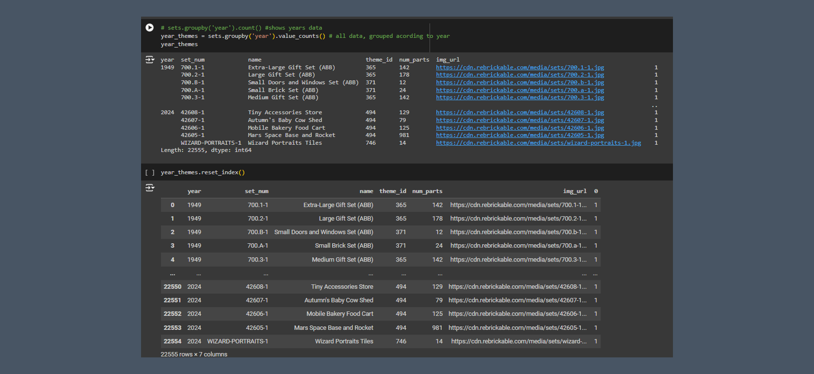

Lego evolution

This Google Colaboratory notebook conducts a comprehensive analysis of LEGO sets data, exploring aspects like color distribution, set production over time, and the introduction of new themes. Leveraging Python libraries like pandas and Matplotlib, it delves into datasets on colors, themes, and sets, unraveling trends and patterns in LEGO's evolution. From identifying the oldest set to plotting the growth of themes and sets over the years, the notebook offers a detailed narrative of LEGO's journey through data-driven insights.